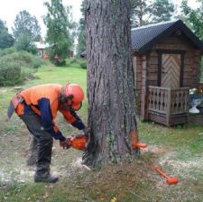
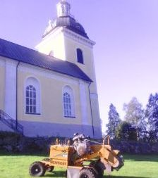

För att fälla trädet, används oftast en kedjesåg. Trädfällaren börjar med att såga bort grenarna från trädet, uppifrån och ner, för att minska Läs mer
Först måste stubben avverkas och klippas ner till marknivå. Därefter placeras stubbfräsen över stubben och tänderna roterar och maler Läs mer
Efter att trädet eller buskan har fällts och klippts i mindre bitar, samlas bitarna vanligtvis upp och transporteras till en anläggning Läs mer

Innan gräsklippning, bör området rensas från stenar och andra hinder. Gräsklipparen väljs beroende på Läs mer